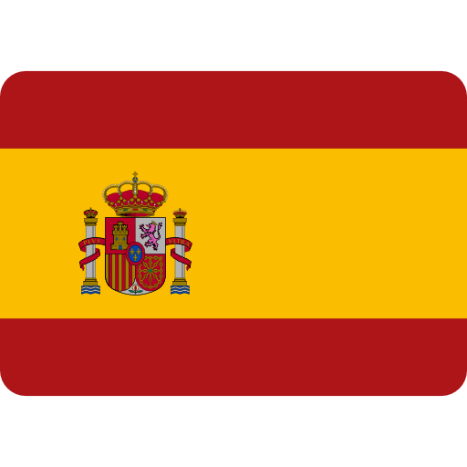

Simone Lacava
+447591860863
simone.lacava@gmail.com
LinkedIn
Summary
Profile
I am multi-lingual, highly synergetic and proactive manager with a passion for technology, performance and data-driven decision making. I successfully transitioned in a short period of time from professional coaching into product management and published specialized content that reached over 20k professionals around the world.
Major Roles and Responsibilities
My ability to deal with change, both in the workplace and in my personal life, enabled me to exceed expectations across different disciplines. I have a track record of success within the organizations I worked for as well as in my personal initiatives.
- Experience of working with C-level executives and collaborating with cross functional and multi-cultural teams. Successfully influenced key shareholders to share and execute the product vision.
- Mobile Apps experience: led the development and launch of two Mobile Apps both on iOS and Android, co-ordinating internal developers with the developers of an outsource company.
- Reached over 20k professionals after publishing an article on the website complementarytraining.com. The article included a unique Monitoring System on MS Excel that manages players’ physical data. Various enquiries were received after the publication of the article, which resulted in a total sale of 15 spreadsheets for a total amount of over £1,000.
Work Experience
- Product Manager at Smartodds
Responsible for the product planning and execution throughout the Product Lifecycle, including gathering and prioritizing product and customer requirements, defining the product vision.
- Product Manager at Tracab
Worked with Company’s VP of Product, CTO and General Manager to define and execute the product roadmap managing priorities across different business units.
- Product Manager at Iterpro
I was the first Product Manager of the company, working closed with CEO and CTO to define the product roadmap.
Education
- MSc Exercise Physiology Loughborogh University
September 2014 - September 2015
- BSc Sports Science Bologna University
September 2010 - October 2013
Skills
- Product Management
- Business Analysis
- Agile Development
- Emotional Intelligence
Awards and Certifications
Others
Languages
 Italian: Native
Italian: Native English: Fluent/Bilingual
English: Fluent/Bilingual- Spanish: Fluent
IT Literacy
- Project Management: Jira, Confluence, Asana, Trello
- CRM: Salesforce, Hubspot
- Customer Support: Intercome, Freshdesk
- Other: Mailchimp, Google Drive, Slack, MS 365